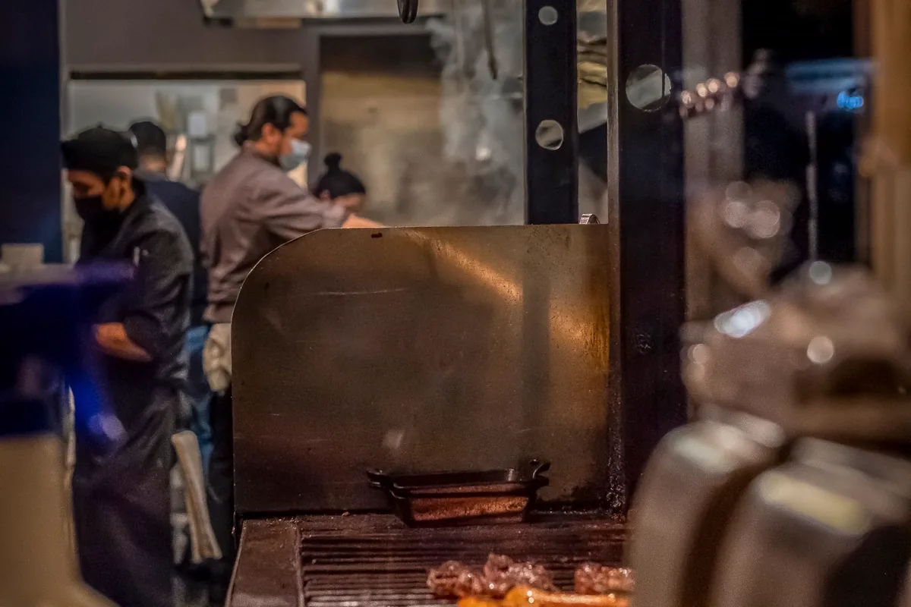
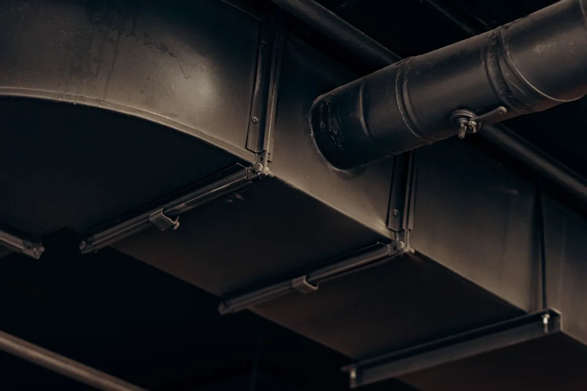

Exaustão que funciona é exaustão calculada
A maior parte dos sistemas de exaustão que não funcionam foi comprada, não projetada. Coifa do tamanho da bancada, duto do diâmetro que coube no forro, exaustor escolhido pela potência do motor. O resultado é sempre o mesmo: fumaça no salão, gordura no teto, ruído alto e conta de energia sem retorno.
Um sistema correto parte da fonte de contaminante: quanto calor, vapor, gordura, fumo ou poeira é gerado, e a que velocidade o ar precisa se mover para capturar isso antes de se espalhar. Só então se define vazão, duto, perda de carga e ventilador.
Sistemas que projetamos e instalamos
Coifas de cozinha industrial
Coifas em aço inox com filtro inercial ou de labirinto, dutos com inclinação e portas de inspeção, exaustor dimensionado e reposição de ar. Atendemos restaurantes, cozinhas coletivas, hotéis, escolas, hospitais e praças de alimentação. Onde há coifa, quase sempre há também câmara fria — e as duas instalações entram juntas no mesmo plano de manutenção.
Exaustão localizada industrial
Captação na fonte para fumo de solda, poeira de esmerilhamento e de corte, névoa de óleo, vapor de processo e gases. Braços articulados, coifas de captação, dutos, filtragem e descarga. É a solução que protege a zona de respiração do trabalhador, e não apenas dilui o contaminante pelo galpão.
Ventilação e exaustão de galpão e casa de máquinas
Renovação de ar, exaustores eólicos e mecânicos, insuflamento, lanternim e sistema de resfriamento evaporativo em galpão quente. Casa de máquinas, subestação e sala de compressor exigem exaustão dimensionada para a carga térmica dos equipamentos.
Torres de resfriamento
Instalação, revisão e manutenção de torres: bacia, enchimento, eliminador de gotas, distribuição de água, ventilador, redutor e tratamento de água. O plano de manutenção contempla controle de incrustação, purga, limpeza e o cuidado sanitário contra proliferação de Legionella.
Fabricação e instalação de dutos
Dutos em chapa galvanizada e inox, conexões, dampers, chapéus e coletores, fabricados na medida do projeto. Duto flexível em trecho longo é economia falsa: aumenta perda de carga, acumula gordura e é o primeiro item a falhar.

Como conduzimos o serviço
Levantamento da fonte
Identificação dos equipamentos e do contaminante gerado, medição do ambiente, avaliação do trajeto possível de duto e do ponto de descarga.
Dimensionamento
Cálculo de vazão, velocidade de captura, diâmetro de duto, perda de carga do sistema e seleção do ventilador no ponto de operação correto.
Fabricação e instalação
Coifas e dutos sob medida, suportação, elétrica de comando, reposição de ar e posicionamento da descarga longe de tomada de ar e de vizinhança.
Comissionamento
Medição da vazão real entregue, balanceamento, verificação de ruído e relatório de comissionamento com ART registrada.
Por que o sistema não puxa
| Sintoma | Causa provável |
|---|---|
| Fumaça escapando pelas laterais da coifa | Coifa sem avanço suficiente sobre o equipamento ou vazão abaixo do necessário |
| Exaustor ligado e ambiente ainda carregado | Falta de reposição de ar — a cozinha entra em pressão negativa |
| Ruído alto e vibração | Ventilador fora do ponto de operação, rotação alta demais ou falta de amortecedor |
| Gordura pingando do duto | Duto sem inclinação, sem calha de coleta e sem porta de inspeção |
| Vizinho reclamando de cheiro | Descarga baixa, voltada para janela ou próxima da tomada de ar do prédio |
| Vazão caindo com o tempo | Filtro e duto saturados de gordura ou correia do ventilador frouxa |
| Poeira depositando no galpão inteiro | Ventilação geral usada onde o caso pedia captação na fonte |

Manutenção e risco de incêndio
Gordura acumulada em coifa e duto é combustível. Uma chama que sobe da chapa encontra o duto engordurado e se propaga rápido, muitas vezes para dentro do forro e da casa de máquinas. Por isso a limpeza periódica não é higiene: é medida de segurança contra incêndio, e conversa diretamente com o sistema de proteção contra incêndio da edificação.
- Filtros: limpeza semanal, ou diária em operação de alto volume;
- Coifa e trecho inicial do duto: mensal a trimestral;
- Duto completo e exaustor: semestral a anual, conforme o volume de fritura;
- Torre de resfriamento: plano contínuo de tratamento de água, com limpeza e análise;
- Registro de cada limpeza, com data e responsável — é o que a seguradora e a auditoria pedem.
Em edificação com sistema de climatização de ambientes, esse plano é complementar ao PMOC, que trata da qualidade do ar interior.
Perguntas frequentes sobre exaustão e coifas
Como se dimensiona a coifa de uma cozinha industrial?
Pela carga térmica dos equipamentos sob a coifa e pela área de captação. A coifa precisa avançar além do equipamento em todos os lados para capturar a pluma de vapor e gordura antes que ela escape, e a velocidade de captura na face precisa ser suficiente para vencer as correntes de ar do ambiente. A partir disso se calcula a vazão do exaustor, o diâmetro do duto e a perda de carga do trajeto. Coifa comprada por tamanho de bancada, sem cálculo, costuma deixar o ambiente cheio de fumaça mesmo funcionando.
Por que a cozinha continua com fumaça mesmo com coifa ligada?
Na maioria dos casos porque falta reposição de ar. Se o exaustor tira ar e nada entra, a cozinha entra em pressão negativa, o exaustor perde vazão real e a fumaça reflui. Outras causas frequentes: coifa curta demais para o equipamento, duto subdimensionado ou com trechos flexíveis e curvas em excesso, filtro saturado de gordura, exaustor com rotação errada e descarga posicionada onde o vento a empurra de volta.
Com que frequência a coifa e o duto precisam ser limpos?
Filtro: limpeza semanal ou até diária em cozinha de alto volume. Coifa e trecho inicial do duto: mensal a trimestral. Duto completo e exaustor: semestral a anual, conforme o tipo de fritura e as horas de operação. A gordura acumulada no duto é combustível: incêndio em cozinha industrial que se propaga pela casa de máquinas quase sempre começou em duto sujo. Por isso a limpeza é item de segurança, e não apenas de higiene — e costuma ser cobrada em auditoria e por seguradora.
Para que serve uma torre de resfriamento e o que ela exige?
A torre de resfriamento rejeita para a atmosfera o calor de um processo ou de um sistema de climatização, resfriando água por evaporação. Exige tratamento de água contínuo, controle de purga e de incrustação, limpeza da bacia e do enchimento e atenção sanitária: torre mal mantida é um foco clássico de proliferação de Legionella, com risco à vizinhança e não apenas a quem opera. Manutenção de torre é serviço com plano escrito e registro, não limpeza eventual.
Exaustão de solda e de poeira é a mesma coisa que ventilação?
Não. Ventilação geral dilui o contaminante no ambiente inteiro; exaustão localizada captura o contaminante na fonte, antes que ele chegue à zona de respiração do trabalhador. Para fumo de solda, poeira de esmerilhamento e névoa de óleo, a solução correta é captação na fonte, com braço articulado ou coifa junto ao ponto de geração. Isso se conecta ao programa de segurança do trabalho e à avaliação de agentes químicos da empresa.
Exaustão e coifas na Grande Vitória
Projeto, instalação e manutenção em cozinhas, indústrias e edificações comerciais:
Sistema de exaustão que não dá conta?
Informe os equipamentos, a área e o trajeto possível de duto. Retornamos com vazão calculada e proposta.